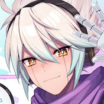

Beastars OP 1 - Wild Side | FULL ENGLISH Cover by We.B ft.Voice of Legosi - Jonah Scott

CyYu Music (We.B)
Published on Mar 20, 2020
Comment
Stanley Parable
I don't even watch Beastars but I found this song through a Genshin animation and it's just too darn catchy, it always gets
stuck in my head! One of the cool things about this though is that the cover is done by CyYu who is the English voice actor for the Genshin
character Cyno, who is my absolute favorite. I actually was already familiar with both CyYu and Jonah Scott because they both voice acted
in a game I was really into in middle school. I will say though, I totally did not recognize Jonah's voice, it's strange not hearing him
voicing a very soft-spoken character
This is one of those songs that just makes me feel powerful and like I can take on anything, so I always play it if I need to get amped up
or need to get out some energy
Stanley Parable
I don't even watch Beastars but I found this song through a Genshin animation and it's just too darn catchy, it always gets stuck in my head! One of the cool things about this though is that the cover is done by CyYu who is the English voice actor for the Genshin character Cyno, who is my absolute favorite. I actually was already familiar with both CyYu and Jonah Scott because they both voice acted in a game I was really into in middle school. I will say though, I totally did not recognize Jonah's voice, it's strange not hearing him voicing a very soft-spoken character
This is one of those songs that just makes me feel powerful and like I can take on anything, so I always play it if I need to get amped up or need to get out some energy